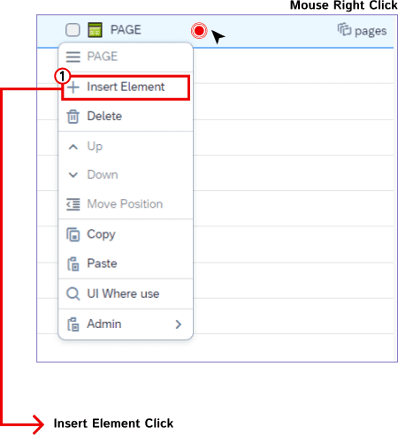
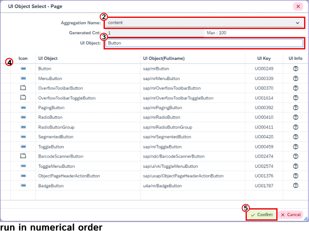

ROOT 속성
ROOT의 속성정보를 확인할 수 있다.
1. UX Design 영역의 ROOT 클릭.
2. Attribute영역이 ROOT 내용으로 변경.
ROOT CONTEXT MENU
ROOT에서 마우스 우 클릭 시 CONTEXT MENU가 나타나지만 비활성화 상태로 보인다.(Admin 제외)
1. ROOT에서 마우스 우 클릭을 하면 비활성화 상태의 CONTEXT MENU가 보인다.

UI 생성
Insert Element로 필요한 UI를 생성할 수 있다.
(ROOT 또는 FLEXITEMDATA와 같은 UI제외)
(ROOT 또는 FLEXITEMDATA와 같은 UI제외)
1. 작업할 UI에 마우스 우 클릭 후 CONTEXT MENU의 Insert Element 클릭.

2. “UI 선택/추가” 기능 Pop-Up이 표시된다.

- ② Aggregation 선택
- ③ UI 검색
- ④ List에서 추가할 UI 선택
- ⑤ Confirm(확인)버튼 클릭
3. 미리보기 영역에 UI 생성.

UI DRAG & DROP
이동시킬 UI를 다른 UI의 하위 요소로 이동할 수 있다.
1. 이동시킬 UI를 Drag하여 다른 UI에 Drop.
(단, 하위 요소에 추가 가능한 Aggregation이 있는 UI만 가능)
(단, 하위 요소에 추가 가능한 Aggregation이 있는 UI만 가능)
2. 미리보기 영역에 대상 UI 이동.
UI CTRL + DRAG & DROP
UI를 다른 UI의 하위 요소로 복사할 수 있다.
1. Ctrl을 누른 상태로 UI를 Drag하여 다른 UI에 Drop.
(단, 하위 요소에 추가 가능한 Aggregation이 있는 UI만 가능)
(단, 하위 요소에 추가 가능한 Aggregation이 있는 UI만 가능)
2. 미리보기 영역에 대상 UI 복사.
UI 다른 어플리케이션에 COPY & PASTE
현재 어플리케이션에서 UI를 복사해 다른 어플리케이션의 UI에 붙여넣을 수 있다.
1. 복사하려는 UI를 마우스 우 클릭한 후 Copy 클릭.
2. 다른 어플리케이션에서 작업하려는 UI를 마우스 우 클릭한 후 Paste 클릭.